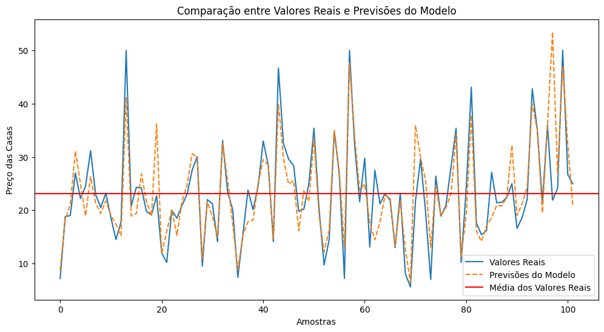
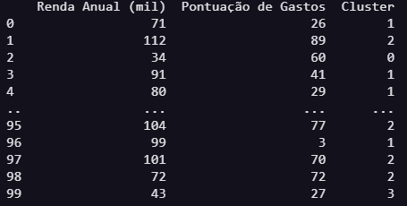
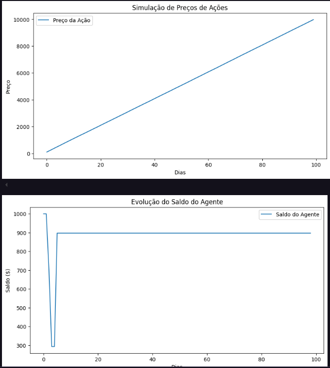
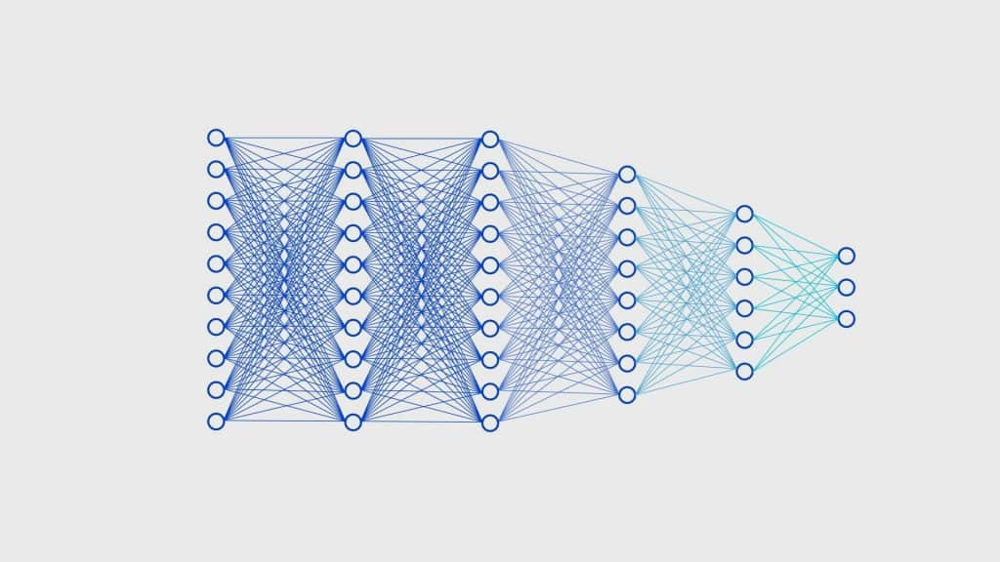

Portifólio 6
Aprendizado de Máquina
\vspace{10cm}
Autor: Wildemberg Sales da Silva Junior
Matrícula: 202017503
Data: 15/02/2025
Instituição/Universidade: Universidade de Brasília(UnB)
Disciplina: Inteligência Artificial - FGA0221
\newpage
Resumo
Neste artigo foram abordados conceitos fundamentais sobre o aprendizado de máquina, desde a base e do porque da aprendizado de agentes, até sua utilização em problemas reais. Foram abordados de forma simples e direta conceitos complexos para uma facilitação do aprendizado sobre alguns dos temas, e em outros casos, assuntos foram aprofundados para que fosse possível obter um entendimento melhor de assuntos mais complexos. Por fim abordamos alguns dos principais algoritmos de forma detalhada, explicando seu funcionamento e aplicando em código a exemplos.
Visão Geral
O conteúdo de aprendizado de máquina é rico e muito interessante, os cenários em que costumam ser aplicados, e as oportunidades de aplicações que eles proporcionam para a solução de problemas complexos, enriquecem ainda mais os conteúdos relacionados a IA. Estudar esse conteúdo traz uma visão muito mais prática e funcional do que muito outros campos dentro de inteligência artificial, com esse aspecto, o conteúdo engaja ainda mais o leitor no estudo sobre IA.
\newpage
Introdução
Neste artigo iremos discutir sobre o sistema de aprendizado dos agentes inteligentes, seus diferentes algoritmos, e suas características aplicadas à problemas reais do nosso cotidiano, com o foco de nos aprofundarmos cada vez mais no que é o aprendizado de máquina.
Primeiramente devemos entender porquê um agente precisa aprender, e para explicar melhor podemos definir três pilares principais que explicam o motivo do aprendizado, esses pilares são a adaptação a novos cenários, a adaptação a mudanças ao longo do tempo, e por último, a resolução de tarefas complexas (RUSSEL; NORVIG, 2010). Nos tópicos a seguir iremos nos aprofundar nesses pilares fazendo um estudo aprofundado sobre as características dos agentes que aprendem e dos diferentes tipos de aprendizado que eles utilizam, para que ao final possamos ter uma visão completa do que é o aprendizado de máquina.
Aprendizado de Máquina
Como dito anteriormente, um agente inteligente aprende por causa de três pilares bases: a adaptação a novos cenários, a adaptação a mudanças ao longo do tempo, e por último, a resolução de tarefas complexas (RUSSEL; NORVIG, 2010).
Um agente deve estar apto a trabalhar em novos cenários pois os projetistas não podem prever todas as situações possíveis em um problema complexo, por isso é interessante que uma agente aprenda a lidar com as mudanças, e a diferentes resultados ou problemas. Também é necessário que um agente consiga se adaptar a mudanças ao longo do tempo e não se tornar obsoleto no decorrer do tempo, ele deve consigar aprender um conteúdo específico e realizar previsões para o futuro, como por exemplo prever o preço de ações na bolsa de valores. E por último, o agente deve ser capaz de resolver tarefas complexas baseado no seu aprendizado, pois muitas tarefas não são triviais de serem programadas por humanos, algumas requerem meses ou anos para serem realizadas, e com isso, se uma agente aprende a resolver problemas complexos, eles irão transformar tarefas que levam meses para serem concluídas, em tarefas que podem ser resolvidas em dias ou horas até.
Portanto, o aprendizado de um agente vai muito além dele entender o seu problema, e sim conseguir adaptar soluções a novos problemas, prever posíveis novos problemas ou novas soluções baseado no que já realizou, e otimizar o processo de realização de tarefas complexas. Então, um agente que consegue utilizar ao menos um dos pilares discutidos, irá conseguir solucionar milhares de problemas de forma otimizada.
Uma questão que fica é: Como um agente pode aprender? E qual o tipo de aprendizado ele precisa ter para resolver um problema específico? No tópico a seguir iremos explorar mais sobre os tipos de aprendizado que uma agente pode ter, e quais caracteristicas e utilidades que um agente pode obter baseado no seu aprendizado.
Tipos de Aprendizados
Os tipos de aprendizado que um agente pode realizar está relacionado em sua entradas e saída de dados, com isso devemos compreender as três formas de entradas de dados que são supervisionada, não supervisionada e reforço, e as duas formas de saída retornada pelo agente, que são classificação e regressão.
Supervisionado
O aprendizado supervisionado se dá quando o agente, recebe um conjunto de valores que possui pares de entrada-saída e com isso cria uma função que atende a lógica de processar a entrada e retornar a saída. Podemos explicar melhor com um exemplo, imagine que nosso agente tem a responsabilidade de calcular valores de casas baseados em diferentes parâmetros (Não são importantes no momento quais parâmetros), com isso nós fornecemos a esse agente uma série de dados de casas que sabemos suas características e seus valores, com esses dados o agente vai entender os padrões de características (entrada) que fazem a casa ter o valor dela (saída), com isso quando precisarmos que o agente estipule um valor de uma nova casa na região, basta fornecer as características dela à ele, que ele irá retornar o valor estipulado para a casa, tudo isso porquê ele criou uma função que consegue realizar esse tipo de cálculo. A seguir no código 1 podemos ver o exemplo de aplicação em código, e a saída dos testes na Imagem 1.
import tensorflow as tf
import numpy as np
from keras.models import Sequential
from keras.layers import Dense
import matplotlib.pyplot as plt
from keras.utils import plot_model
data = tf.keras.datasets.boston_housing
(x_train, y_train), (x_test, y_test) = data.load_data()
media = x_train.mean(axis = 0)
desvio = x_train.std(axis = 0)
x_train = (x_train - media) / desvio
x_test = (x_test - media) / desvio
model = Sequential([
Dense(units = 64,
activation = 'relu',
input_shape = [13]),
Dense(units = 64,
activation = 'relu'),
Dense(units = 1)
])
model.compile(optimizer = 'adam',
loss = 'mse',
metrics = ['mae'])
history = model.fit(
x_train,
y_train,
epochs = 100,
validation_split = 0.2
)
x_new = x_test
y_pred = model.predict(x_new)
# Converter as previsões do modelo para uma lista
y_pred_list = [pred[0] for pred in y_pred]
# Calcular a média dos valores reais
y_test_mean = np.mean(y_test)
# Plotar os valores reais, as previsões do modelo e a linha da média
plt.plot(y_test, label='Valores Reais')
plt.plot(y_pred_list, label='Previsões do Modelo', linestyle='--')
plt.axhline(y_test_mean, color='r', linestyle='-', label='Média dos Valores Reais')
plt.xlabel('Amostras')
plt.ylabel('Preço das Casas')
plt.title('Comparação entre Valores Reais e Previsões do Modelo')
plt.legend()
plt.show()

Não Supervisionado
O aprendizado não supervisionado acontece quando no conjunto de dados fornecidos ao agente, não existe um par de valores entrada-saída, somente valores de entrada, com isso, o algoritmo fica responsável por fazer a classificação dos dados de forma independente. Um exemplo que pode ser utilizado é um agente aplicado em lojas que analisa os compradores e verifica os diferentes comportamentos de consumo deles. No código 2 temos a aplicação do exemplo.
import numpy as np
import pandas as pd
import matplotlib.pyplot as plt
from sklearn.cluster import KMeans
from sklearn.preprocessing import StandardScaler
# Criando um conjunto de dados fictício (Renda Anual vs. Pontuação de Gastos)
np.random.seed(42)
clientes = pd.DataFrame({
'Renda Anual (mil)': np.random.randint(20, 120, 100), # Entre 20k e 120k
'Pontuação de Gastos': np.random.randint(1, 100, 100) # Escala de 1 a 100
})
# Normalizando os dados para melhor performance do K-Means
scaler = StandardScaler()
dados_normalizados = scaler.fit_transform(clientes)
# Aplicando o algoritmo K-Means
kmeans = KMeans(n_clusters=4, random_state=42, n_init=10)
clientes['Cluster'] = kmeans.fit_predict(dados_normalizados)
# Visualizando os clusters
plt.figure(figsize=(8, 6))
plt.scatter(clientes['Renda Anual (mil)'], clientes['Pontuação de Gastos'],
c=clientes['Cluster'], cmap='viridis', edgecolors='black', s=80)
plt.scatter(kmeans.cluster_centers_[:, 0] * scaler.scale_[0] + scaler.mean_[0],
kmeans.cluster_centers_[:, 1] * scaler.scale_[1] + scaler.mean_[1],
c='red', marker='X', s=200, label='Centroides')
plt.xlabel('Renda Anual (mil)')
plt.ylabel('Pontuação de Gastos')
plt.title('Segmentação de Clientes com K-Means')
plt.legend()
plt.show()
# Exibir os primeiros registros com os clusters atribuídos
print(clientes.head())

Reforço
O aprendizado por reforço é diferentes dos outros aprendizados já citados, neste modelo o agente aprende baseado em tentativas e erros interagindo com o ambiente em que está cituado, com isso, ele executa uma série de ações em busca de recompensa, mas caso ele faça algo "errado", ele recebe uma punição que corrige seus próximos passos. Um exemplo de agente que aprende com esse modelo é um agente que trabalha com compra, venda e mantimento de ações no mercado financeiro, onde sua recompensa é ter lucro, e sua punição é ter prejuízo. No código 3 podemos ter um exemplo com dados simulados para entendermos a dinâmica do agente, e na imagem 3 o resultado da evolução do saldo que o agente coordenava.
import numpy as np
import random
import matplotlib.pyplot as plt
# Simulação de preços de ações (100 dias)
np.random.seed(42)
precos = np.cumsum(np.random.randn(100) * 2 + 100) # Criando preços fictícios
# Parâmetros do Q-Learning
acoes = [0, 1, 2] # 0: Manter, 1: Comprar, 2: Vender
q_table = np.zeros((100, len(acoes))) # Tabela Q inicializada com zeros
gamma = 0.95 # Fator de desconto
alpha = 0.1 # Taxa de aprendizado
epsilon = 1.0 # Exploração inicial
epsilon_decay = 0.995 # Decaimento da exploração
episodios = 500 # Número de episódios
# Treinamento do agente
for episodio in range(episodios):
saldo = 1000 # Saldo inicial
acao_atual = None
for dia in range(len(precos) - 1):
estado = dia
if random.uniform(0, 1) < epsilon:
acao = random.choice(acoes) # Exploração
else:
acao = np.argmax(q_table[estado]) # Exploração baseada na Tabela Q
# Definição da recompensa
recompensa = 0
if acao == 1 and saldo >= precos[dia]: # Comprar
acao_atual = precos[dia]
saldo -= precos[dia]
elif acao == 2 and acao_atual is not None: # Vender
recompensa = precos[dia] - acao_atual # Lucro ou prejuízo
saldo += precos[dia]
acao_atual = None
proximo_estado = min(dia + 1, len(precos) - 1)
q_table[estado, acao] = (1 - alpha) * q_table[estado, acao] + \
alpha * (recompensa + gamma * np.max(q_table[proximo_estado]))
epsilon *= epsilon_decay # Redução da exploração
# Teste do agente treinado
saldo = 1000
acao_atual = None
lucros = []
for dia in range(len(precos) - 1):
estado = dia
acao = np.argmax(q_table[estado]) # Escolha a melhor ação
if acao == 1 and saldo >= precos[dia]: # Comprar
acao_atual = precos[dia]
saldo -= precos[dia]
elif acao == 2 and acao_atual is not None: # Vender
saldo += precos[dia]
acao_atual = None
lucros.append(saldo)
# Plotando os preços e os ganhos
plt.figure(figsize=(10, 5))
plt.plot(precos, label="Preço da Ação")
plt.xlabel("Dias")
plt.ylabel("Preço")
plt.legend()
plt.title("Simulação de Preços de Ações")
plt.show()
plt.figure(figsize=(10, 5))
plt.plot(lucros, label="Saldo do Agente")
plt.xlabel("Dias")
plt.ylabel("Saldo ($)")
plt.legend()
plt.title("Evolução do Saldo do Agente")
plt.show()

Classificação e Regressão
Como dito anteriormente, os agentes que aprendem, podem ter sua saída de duas formas, essas formas são a classificação e a regressão.
A classificação se refere quando um agente tem uma saída com valores finitos, como por exemplo, o agente deve falar qual o clima no momento, sendo que sua saída só pode assumir três valores (ensolarado, nublado, chuvoso). E já a regressão, o agente deve retornar um número como saída, por exemplo, ele deve avaliar o custo de uma casa, baseado nos dados de valores das casas vizinhas a que está sendo analizada.
Ao nos aprofundarmos sobre os sistemas de classificação e regressão, temos alguns detalhes que devem ser entendidos para compreender características sobre como funciona alguns processos pré-treinamento do modelo, e pós treinamento também, nesse sentido podemos citar o pré-processamento de dados, a extração de características, e alguns problemas derivados do resultado do treinamento que são o overfeeting e o underfeeting.
Pré-processamento
Quando vamos treinar um agente, devemos ter um cuidado com o dataset (conjunto de dados do treinamento) que iremos utilizar para o treinamento, é importante explorar o dataset em busca de problemas que podem causar erros ou atrapalhar o nosso treinamento. Alguns do pré-processamentos que podemos realizar dentro de um dataset é retirar dados incorretos, vazios, ou muito poluídos (no caso de imagens com muito conteúdo), pode ser realizado também ajustes de normalização e/ou escalonamento que faz com que os dados fiquem com um padrão melhor que ajuda no treinamento e evita erros muito altos. Portanto, existem diversas técnicas de pré-processamento que auxiliam o processo de treinamento do agente, aumento o conhecimento do agente sobre o dataset.
Extração de Características
O processo de extração de características é um processo que transforma os dados "brutos" em dados "lapidados", ou seja, pegamos dados da forma que chegam pelo dataset, tratamos eles e tornamos eles dados utilizáveis pelo modelo. É importante entender que o processo de extração pode ser realizado tanto pelo desenvolvedor do agente, quanto pelo próprio agente. Quando feito pelo desenvolvedor, se realiza esse processo já citado de forma manual, tranformando os dados em algo melhorado e mais performático. Quando realizado pelo agente, costuma acontecer quando está sendo utilizado redes neurais ou deep leaning que são modelos mais complexos de treinamento, um exemplo disso é quando utilizamos redes convulocionais (CNN) que fazem a extração de características de forma independente em imagens por exemplo.
Overfitting e Underfitting
Durante o treinamento, o agente aprende o máximo de características possíveis e reconhece os padrões necessários para a classificação de um dado, mas, o aprendizado excessivo de determinada características pode causar problemas ao agente gerando um Overfitting, como aprender muitos ruídos ou dados irregulares não tratados, que ao final, o modelo se sai perfeito durante os testes do treinamento com uma acurácia por volta dos 100%, mas ao tentar utilizar novos dados ele não consegue processar ou classificar. Já quando o modelo não consegue entender os dados fornecidos e não percebe os padrões dos dados para entendê-lo, isso é um Underfitting, ou seja, o agente não conseguiu aprender nada com o dataset fornecido.
Algoritmos de Aprendizado Supervisionado
Nesta seção iremos analisar alguns algoritmos de aprendizado supervisionado, e entenderemos algumas aplicações possíveis para esses modelos.
K-Nearest Neighbors
O algoritmo K-Nearest Neighbors é um algoritmo que classifica um determinado dado baseado na quantidade de "vizinhos" próximos a ele. Explicando o algoritmo de maneira mais simples, primeiro você escolhe um K que será a quantidade de "vizinhos" que serão analisados, após isso, o algoritmo irá mapear os dados e verificar os K "vizinhos" mais próximos desse dado (os vizinhos serão os outros dados já classificados), com isso, o algoritmo se utiliza da distância euclidiana por exemplo, para encontrar a distância entre o dado que está sendo analisado e os K vizinhos mais próximos, ao final, pensando em um mapeamento onde só existe duas classificações 0 e 1 (binária), se o dado analisado tiver a maior parte dos vizinhos perto dentro da zona de 0, então ele será provavelmente 0, se não, ele será 1.
Modelos Lineares
Modelos lineares são algoritmos que usa equações matemáticas para relacionamento de variáveis, com o intuito de conseguir prever um resultado baseado em 1 ou mais características dos dados fornecidos, desta forma, ela cria pesos para cada uma das características para no final poder generalizar essa função para outros valores que receber.
Existem dois tipos de modelos lineares, um de regressão linear e o outro de regressão logística. O de regressão linear é mais utilizado quando queremos prever um valor específico baseado nos dados de entrada. Já a regressão logística é mais utilizada quando queremos classificar dados, como no caso citado anteriormente da análise de compradores de uma loja.
Classificadores Bayesianos
Os classificadores Bayesianos funcionam basicamente da mesma forma que os modelos lineares de regressão logística, sua grande diferença é que eles se utilizam do teorema de Bayes que ao final irá retornar a probabilidade do dado fornecido pertencer a uma determinada classe. Ele também supõe que os dados são independentes em seu conjunto, onde muitas vezes isso não é realidade, o que pode causar problemas em suas avaliações. Em contra partida a esse "problema" que ele possui, ele é muito rápido em seu treinamento, principalmente em grandes conjuntos de dados.
Redes Neurais e Aprendizado Profundo
As redes neurais são um conjunto de modelos e algoritmos que simulam uma rede de neurônios assim como no cérebro humano, todos as camadas do modelo são interconectadas, sendo todos os neurônios sendo conectados a todos os outros neurônios da camada anterior e da camada seguinte, isso é uma das características que tornam esse tipo de algoritmo extremamente complexo e eficiente.
Um exemplo de rede neural é as redes convulocionais, esses tipos de redes costumam criar algo parecido com a imagem 4, onde cada círculo representa um neurônio e cada neurônio é conectado a todos da camada anterior e posterior.

Um exemplo que reforça o entendimento de uma rede neural convulocional, é um algoritmo que recebe a imagem de uma planta e que retorna a doença que ela possui. Esse algoritmo recebe como dado um par de entrada-saída, sendo no caso uma imagem e uma label que representa a doença presente na imagem, e ao final retorna a probabilidade das doenças que podem estar presentes na planta. A seguir no código 4 podemos ver um exemplo aplicado deste algoritmo.
import tensorflow_datasets as tfds
from math import sqrt
import pandas as pd
import numpy as np
from numpy import mean
import tensorflow as tf
import tensorflow_hub as hub
from tensorflow.keras import models, layers
from keras.optimizers.legacy import Adam
from tensorflow.keras.metrics import BinaryAccuracy, TruePositives, TrueNegatives, FalsePositives, FalseNegatives, PrecisionAtRecall, SensitivityAtSpecificity, SpecificityAtSensitivity, Recall
import keras
from tensorflow.keras.models import load_model
from keras.preprocessing.image import ImageDataGenerator, load_img, img_to_array
import matplotlib.pyplot as plt
import seaborn as sns
from google.colab import files
IMAGE_SIZE=128
BATCH_SIZE=8
CHANNELS=3
EPOCHS=30
METRICS = [keras.metrics.CategoricalAccuracy(name = 'accuracy'),
keras.metrics.TruePositives(thresholds = 0.50, name = 'tp'),
keras.metrics.TrueNegatives(thresholds = 0.50, name = 'tn'),
keras.metrics.FalsePositives(thresholds = 0.50, name = 'fp'),
keras.metrics.FalseNegatives(thresholds = 0.50, name = 'fn'),
keras.metrics.PrecisionAtRecall(recall = 0.50, name = 'precision'),
keras.metrics.SensitivityAtSpecificity(0.50, name = 'sensitivity'),
keras.metrics.SpecificityAtSensitivity(sensitivity = 0.50,
name = 'specificity'),
keras.metrics.Recall(name='recall')]
tf.keras.backend.clear_session() # Limpar o CACHE da seção
(ds_train), info = tfds.load('plant_village', split='train', with_info=True)
ds = tf.keras.preprocessing.image_dataset_from_directory("/root/tensorflow_datasets/downloads/extracted/ZIP.data.mend.com_publ-file_data_tywb_file_d565-c1rDQyRTmE0CqGGXmH53WlQp0NWefMfDW89aj1A0m5D_A/Plant_leave_diseases_dataset_without_augmentation",
shuffle=True,
image_size=(IMAGE_SIZE,IMAGE_SIZE),
batch_size=BATCH_SIZE)
class_name = ds.class_names
ds = ds.shuffle(buffer_size=1000, seed=12)
ds = ds.take(int(len(ds)/2))
train_size = 0.8
train_size = int(len(ds)*train_size)
train_ds = ds.take(train_size)
test_ds = ds.skip(int(train_size))
test_size = int(len(test_ds)*0.5)
validation_ds = test_ds.take(test_size)
test_ds = test_ds.skip(test_size)
train_ds = train_ds.cache().shuffle(1000).prefetch(buffer_size=tf.data.AUTOTUNE)
validation_ds = validation_ds.cache().shuffle(1000).prefetch(buffer_size=tf.data.AUTOTUNE)
test_ds = test_ds.cache().shuffle(1000).prefetch(buffer_size=tf.data.AUTOTUNE)
resize_rescaling = tf.keras.Sequential([
layers.experimental.preprocessing.Resizing(*IMAGE_SIZE),
layers.experimental.preprocessing.Rescaling(1.0/255)
])
data_augmentation = tf.keras.Sequential([
layers.experimental.preprocessing.RandomFlip("horizontal_and_vertical"),
layers.experimental.preprocessing.RandomRotation(0.2),
])
nClasses = 39
# Aplicando a função de geração das variações das imagens e ajuste do tamanho e escala das imagens nos conjuntos de treinamento e validação
def preprocess_image(image, label):
image = resize_rescaling(image)
image = data_augmentation(image)
label = tf.one_hot(tf.cast(label, tf.int32), depth=nClasses)
return image, label
train_ds = train_ds.map(preprocess_image).prefetch(buffer_size=tf.data.AUTOTUNE)
validation_ds = validation_ds.map(
lambda x, y: (resize_rescaling(x), tf.one_hot(tf.cast(y, tf.int32), depth=nClasses))
).prefetch(buffer_size=tf.data.AUTOTUNE)
test_ds = test_ds.map(
lambda x, y: (resize_rescaling(x), tf.one_hot(tf.cast(y, tf.int32), depth=nClasses))
).prefetch(buffer_size=tf.data.AUTOTUNE)
inputShape = (IMAGE_SIZE, IMAGE_SIZE, CHANNELS)
# Definição da arquitetura do modelo
model = models.Sequential()
model.add(layers.Conv2D(filters = 64,
kernel_size = (3, 3),
input_shape = inputShape,
activation = 'relu'))
model.add(layers.BatchNormalization()) # Polimento dos dados usando normalização
model.add(layers.MaxPooling2D(pool_size = (2, 2))) # reduz a dimensão dos mapas de características
model.add(layers.Conv2D(filters = 256,
kernel_size = (3, 3),
activation = 'relu'))
model.add(layers.Conv2D(filters = 256,
kernel_size = (3, 3),
activation = 'relu'))
model.add(layers.BatchNormalization())
model.add(layers.MaxPooling2D(pool_size = (2, 2)))
# Fim da alimentação do modelo e extração de características
# Ínicio do treinamento do modelo
model.add(layers.Flatten()) #achatamento para a próxima camada para encontrar os melhores pesos
model.add(layers.Dense(units = 256,
activation = 'relu'))
model.add(layers.Dropout(0.2))
model.add(layers.Dense(units = 256,
activation = 'relu'))
model.add(layers.Dropout(0.2))
model.add(layers.Dense(units = 128,
activation = 'relu'))
model.add(layers.Dense(units = nClasses,
activation = 'softmax'))
optimizer = Adam(learning_rate=0.001, beta_1=0.9, beta_2=0.999, epsilon=0.1, decay=0.0)
# Compilação do Modelo
model.compile(loss = keras.losses.categorical_crossentropy,
optimizer = optimizer,
metrics = METRICS)
learning_rate = keras.callbacks.ReduceLROnPlateau(monitor = 'accuracy',
factor = 0.2, # a taxa de aprendizado será multiplicada por 0.2 sempre que as condições forem satisfeitas
patience = 1, # limite de épocas que a taxa de acurácio pode não melhorar, caso ultrapasse, a taxa de aprendizado é reduzida
min_lr = 0.000001, # Limite da taxa de aprendizado, ela não irá diminuir mais que isso
verbose = 1) # usado para imprimir a mensagem que a taxa foi modificada
tf.keras.backend.clear_session()
hist = model.fit(train_ds,
epochs = EPOCHS,
batch_size=BATCH_SIZE,
validation_data = validation_ds,
validation_steps = 25,
callbacks = [learning_rate],
verbose = 1)
Portanto, se observamos o código 4 fica claro todas as etapas já citadas de pré-processamento de dados, observamos que o próprio algoritmo realiza a extração de características, e existem várias outras técnicas inclusas para melhor aprendizado do modelo.
Explainable Artificial Intelligence (XAI)
O Explanaible Artificial Intelligence (XAI) é um conjunto de método e processos desenvolvidos para que os usuários humanos consigam entender e confiar nos resultados e saídas fornecidos por agentes e algoritmos (IBM, 2025).
Um dos principais focos do XAI é permitir que os usuários humanos entendam como funciona o processo de decisões de um modelo, já que as IA's tradicionais não mostram isso a nós. Essa transparência ajuda a construir uma confiança, mitigar riscos e garantir a responsabilidades desses modelos. Essa explicabilidade que a XAI provê aos usuários, ajuda a identificar vieses, desvios e riscos dos modelos utilizados, garantindo a escalabilidade e a connfiabilidade.
Algoritmos de Aprendizado Não Supervisionado
Nesta seção iremos discutir e conhecer um pouco mais sobre alguns dos principais algoritmos de aprendizagem não supervisionado.
K-means Clustering
O K-means Clustering é utilizado como um modelo classificatório que tem como objetivo separar em K grupos (clusters) os dados que foram fornecidos, sendo que o valor de K é definido pelo desenvolvedor do agente. Ao iniciar o algoritmo seleciona K pontos de forma aleatória dentro dos conjuntos para que sejam suas posições centrais, após isso o algoritmo usa alguma função matemática como a distância Euclidiana para calcular o centro real de cada grupo, e com isso ele consegue separar da forma correta os dados em seus respectivos grupos. A seguir podemos ver um exemplo do algoritmo K-means no código 5.
import numpy as np
import matplotlib.pyplot as plt
from sklearn.cluster import KMeans
# Gerando um conjunto de dados de exemplo
np.random.seed(42)
X = np.random.rand(100, 2) * 10 # 100 pontos com 2 características
# Aplicando K-means com K=3
kmeans = KMeans(n_clusters=3, random_state=42)
kmeans.fit(X)
labels = kmeans.labels_
centroids = kmeans.cluster_centers_
# Plotando os clusters
plt.scatter(X[:, 0], X[:, 1], c=labels, cmap='viridis', marker='o', edgecolors='k')
plt.scatter(centroids[:, 0], centroids[:, 1], c='red', marker='X', s=200, label="Centróides")
plt.title("Agrupamento com K-means")
plt.xlabel("Característica 1")
plt.ylabel("Característica 2")
plt.legend()
plt.show()
Self-organized Maps
O algoritmo Self-organized Maps, diferente do K-means, se baseia em redes neurais artificiais, e seu principal objetivo é mapear os padrões para agrupá-los, e sua saída é um mapa bidimensional. Ele extrai suas características de forma automática e corrije os pesos de sua função com o decorrer do processo de treinamento, onde esse processo termina após se tornarem o mais eficiente possível, e após agrupar os padrões similares. No código 6 podemos ver a aplicação do algoritmo utilizando dados fictícios.
import numpy as np
import matplotlib.pyplot as plt
from minisom import MiniSom
# Gerando dados sintéticos
np.random.seed(42)
X = np.random.rand(200, 3) # 200 amostras com 3 características
# Criando e treinando a rede SOM (10x10)
som = MiniSom(10, 10, 3, sigma=1.0, learning_rate=0.5)
som.random_weights_init(X)
som.train_random(X, 1000)
# Criando um mapa de ativação dos neurônios
plt.figure(figsize=(8, 6))
for x, y in X:
w = som.winner([x, y]) # Encontra o neurônio vencedor
plt.plot(w[0] + 0.5, w[1] + 0.5, 'ro', markersize=5)
plt.xlim(0, som.get_weights().shape[0])
plt.ylim(0, som.get_weights().shape[1])
plt.title("Mapa Auto-organizável (SOM)")
plt.show()
Algoritmos de Aprendizado por Reforço
Nesta seção iremos explorar algoritmos de aprendizado por reforço, entendendo suas características e entendendo seu funcionamento.
Q-Leaning
O Q-Leaning é um algoritmo de aprendizado por reforço baseado em valores, onde é usado para ensinar agentes a tomar decisões independente do ambiente inserido, com isso ele faz com que o agente aprenda de qualquer maneira o melhor conjunto de ações possíveis para se utilizar no ambiente, independente da estratégia fornecida durante o treinamento, e mapeando no Q-Table (Tabela que representa as ações possíveis). Um exemplo de idéia de agente que é muito semelhante ao que o algoritmo propõe é o Mundo de Wumpus, onde um agente deve se adaptar ao ambiente baseado no que ele tem percepção no momento. A seguir podemos ver a aplicação do algoritmo no Mundo de Wumpus no código 7.
import numpy as np
import random
# Definição do ambiente do Mundo de Wumpus
grid_size = 4
actions = ['up', 'down', 'left', 'right']
n_actions = len(actions)
n_states = grid_size * grid_size
# Definição das recompensas do ambiente
reward_map = np.full((grid_size, grid_size), -1) # Penalidade por cada movimento
reward_map[0, 3] = 100 # Ouro
reward_map[1, 3] = -100 # Wumpus
reward_map[2, 2] = -100 # Poço
reward_map[3, 3] = -100 # Poço
# Inicializa a Q-Table
Q_table = np.zeros((n_states, n_actions))
# Hiperparâmetros
alpha = 0.1 # Taxa de aprendizado
gamma = 0.9 # Fator de desconto
epsilon = 1.0 # Probabilidade de exploração
epsilon_decay = 0.99
epsilon_min = 0.01
num_episodes = 5000 # Número de rodadas de treinamento
# Função para converter posição no grid para estado
def state_from_position(row, col):
return row * grid_size + col
# Função para obter a nova posição após uma ação
def get_new_position(row, col, action):
if action == 'up' and row > 0:
row -= 1
elif action == 'down' and row < grid_size - 1:
row += 1
elif action == 'left' and col > 0:
col -= 1
elif action == 'right' and col < grid_size - 1:
col += 1
return row, col
# Treinamento com Q-Learning
for episode in range(num_episodes):
row, col = 3, 0 # Começa no canto inferior esquerdo
done = False
while not done:
state = state_from_position(row, col)
# Exploração x Exploração
if np.random.rand() < epsilon:
action_index = np.random.choice(n_actions) # Exploração
else:
action_index = np.argmax(Q_table[state, :]) # Exploração
action = actions[action_index]
new_row, new_col = get_new_position(row, col, action)
new_state = state_from_position(new_row, new_col)
# Obtém recompensa
reward = reward_map[new_row, new_col]
# Atualiza Q-Table
Q_table[state, action_index] = Q_table[state, action_index] + alpha * (
reward + gamma * np.max(Q_table[new_state, :]) - Q_table[state, action_index]
)
row, col = new_row, new_col
# Se encontrar o ouro ou cair em um poço/Wumpus, encerra o episódio
if reward == 100 or reward == -100:
done = True
# Redução do epsilon para diminuir a exploração ao longo do tempo
epsilon = max(epsilon * epsilon_decay, epsilon_min)
# Testando o agente treinado
row, col = 3, 0 # Posição inicial do agente
print("\nCaminho aprendido pelo agente:\n")
while True:
state = state_from_position(row, col)
action_index = np.argmax(Q_table[state, :])
action = actions[action_index]
print(f"Agente está em ({row}, {col}), ação escolhida: {action}")
row, col = get_new_position(row, col, action)
if reward_map[row, col] == 100:
print(f"Agente encontrou o ouro em ({row}, {col})! ")
break
elif reward_map[row, col] == -100:
print(f"Agente morreu no poço ou pelo Wumpus em ({row}, {col})! ")
break
Deep Q-Network
O Depp Q-Network (DQN) é uma versão aprimorada do Q-Learning que se utiliza de redes neurais ao invés de uma Q-Table para estipular suas ações, e com isso o tornando mais eficiente para ambientes complexos e contínuos. Podemos ver um exemplo da aplicação do DQN em um jogo chamado CartPole, onde o agente tem que equilibrar um poste sobre um carrinho, podemos ver sua aplicação no código 8.
import gym
import numpy as np
import random
import torch
import torch.nn as nn
import torch.optim as optim
from collections import deque
# Criando o ambiente CartPole
env = gym.make("CartPole-v1")
# Definição da rede neural para o agente DQN
class DQN(nn.Module):
def __init__(self, state_size, action_size):
super(DQN, self).__init__()
self.fc1 = nn.Linear(state_size, 24)
self.fc2 = nn.Linear(24, 24)
self.fc3 = nn.Linear(24, action_size)
def forward(self, x):
x = torch.relu(self.fc1(x))
x = torch.relu(self.fc2(x))
return self.fc3(x)
# Hiperparâmetros
state_size = env.observation_space.shape[0] # 4 estados (posição, velocidade, ângulo do poste, velocidade angular)
action_size = env.action_space.n # 2 ações (esquerda e direita)
learning_rate = 0.001
gamma = 0.99 # Fator de desconto
epsilon = 1.0 # Exploração inicial
epsilon_min = 0.01
epsilon_decay = 0.995
batch_size = 32
memory = deque(maxlen=2000) # Memória para replay
model = DQN(state_size, action_size) # Criando o modelo DQN
optimizer = optim.Adam(model.parameters(), lr=learning_rate)
loss_fn = nn.MSELoss()
# Função para escolher ação (Exploração x Exploração)
def choose_action(state):
if np.random.rand() <= epsilon:
return random.choice([0, 1]) # Exploração
with torch.no_grad():
return torch.argmax(model(torch.FloatTensor(state))).item() # Exploração
# Treinamento do DQN
def train():
global epsilon
if len(memory) < batch_size:
return
batch = random.sample(memory, batch_size)
states, actions, rewards, next_states, dones = zip(*batch)
states = torch.FloatTensor(states)
actions = torch.LongTensor(actions)
rewards = torch.FloatTensor(rewards)
next_states = torch.FloatTensor(next_states)
dones = torch.FloatTensor(dones)
# Previsão de valores Q atuais
q_values = model(states).gather(1, actions.unsqueeze(1)).squeeze(1)
# Previsão de valores Q futuros
with torch.no_grad():
max_next_q_values = model(next_states).max(1)[0]
targets = rewards + gamma * max_next_q_values * (1 - dones)
loss = loss_fn(q_values, targets)
optimizer.zero_grad()
loss.backward()
optimizer.step()
# Redução do epsilon
if epsilon > epsilon_min:
epsilon *= epsilon_decay
# Loop de treinamento
num_episodes = 500
for episode in range(num_episodes):
state = env.reset()[0]
total_reward = 0
while True:
action = choose_action(state)
next_state, reward, done, _, _ = env.step(action)
memory.append((state, action, reward, next_state, done))
state = next_state
total_reward += reward
if done:
print(f" Episódio {episode + 1}, Recompensa: {total_reward}")
break
train()
Conclusão
Portanto, após explorar os fundamentos do aprendizado de agentes, passando por suas motivações até aos exemplos de utilizações reais, vimos que agentes que aprendem podem solucionar centenas de problemas complexos existentes no mundo atual, além de abrir oportunidades de resolver problemas ainda não explorados. Esses modelos de agentes são extremamente importantes para o estudo e evolução dos futuros modelos de IA's, já que abrem portas para resolverem problemas ainda mais complexos dos que existem atualmente.
Referências
[1] RUSSELL, Stuart; NORVIG, Peter. Inteligência Artificial: Uma Abordagem Moderna – 3ª edição.
[2] OPENAI. Assistente Virtual ChatGPT. Respostas geradas com base em inteligência artificial. Disponível em: https://openai.com. Acesso em: 04 dez. 2025.
[3] IBM. (n.d.). Inteligência Artificial Explicável (XAI). IBM. Recuperado em 17 de fevereiro de 2025, de https://www.ibm.com/br-pt/topics/explainable-ai#:~:text=Intelig%C3%AAncia%20artificial%20explic%C3%A1vel%20%28XAI%29%20%C3%A9%20um%20conjunto%20de,sa%C3%ADdas%20criadas%20por%20algoritmos%20de%20aprendizado%20de%20m%C3%A1quina.